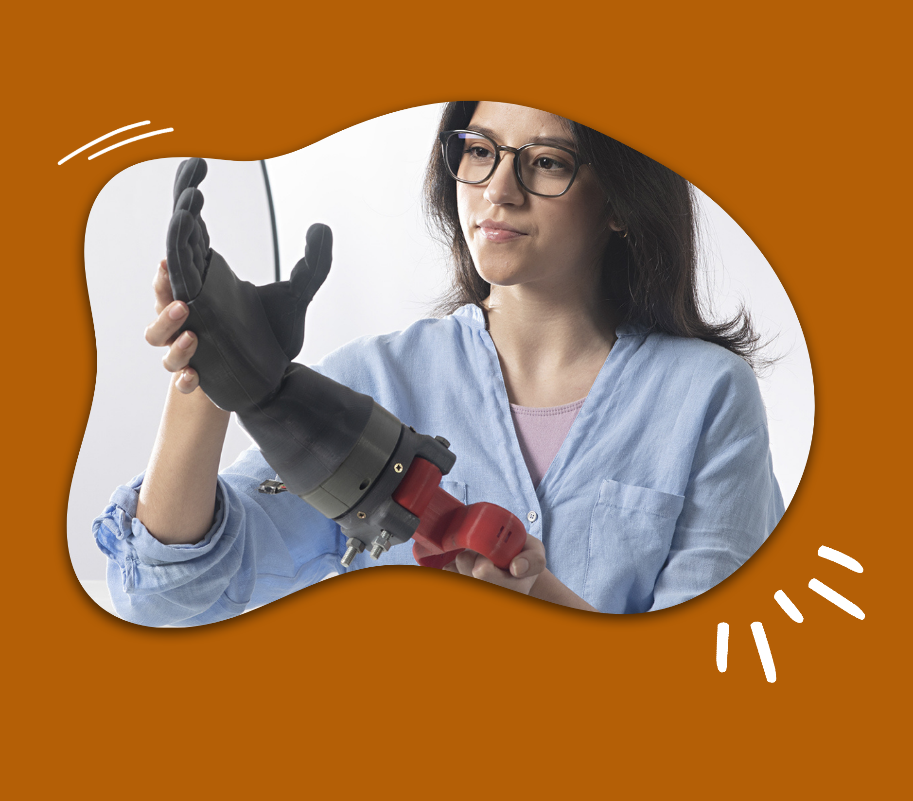

Somos estudiantes de Ingeniería Biomédica PUCP-UPCH con la misión de informar y compartir contenido sobre esta increíble carrera. Nuestro objetivos:
Visión:
Nuestra meta es crear alianzas con otros páginas informativas de Ingeniería Biomédica, a su vez crear más contenido con ayuda de nuevos voluntarios que colaboren en la edición y redacción de posts.
Misión:
Evaluar y publicar información novedosa y verídica a fin de mantener la curiosidad de nuestros seguidores. También mejoramos la experiencia del usuario al interactuar con la página y redes sociales.
Utiliza los conocimientos en principios de ingeniería y ciencias para resolver problemas médicos, innovar en soluciones orientados a mejorar la calidad de vida de las personas, de esta manera transforma la salud.